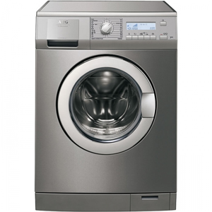

Ремонт стиральных машин
Альметьевский сервисный центр производит срочный и качественный стиральных и посудомоечных машин.
Даже качественные и дорогие стиральные машины автоматического типа известных брендов, могут, казалось бы, безнадежно сломаться. И это факт! Ведь от поломок никто не застрахован. Поэтому мы предлагаем свои услуги - это ремонт стиральных машин и диагностика стиральных машин в Альметьвском сервис центре, независимо от сложности поломки и марки машины.
Неисправности стиральных машин
Поскольку все стиралки, будь то автоматические агрегаты Bosch или полуавтоматы Beko, работают по одному принципу, то и их основные неисправности составляют общий список:
- - прорыв входного клапана (манжеты люка);
- - изношенность сальников;
- - выход из строя подшипников;
- - засор сливного насоса-помпы;
- - выход из строя нагревательного элемента.
- - неисправность прессостата;
- - пробой устройства блокировки люка;
- - выход из строя электродвигателя.
Наша работа в процессе ремонта стиральных машин заключается:
-
в диагностике стиральных машин автоматического типа даже с самыми серьезными неисправностями,
в устранении всевозможных засоров в фильтрах, шлангах, помпе и насосе;
в ремонте модулей и повторной прошивке электронных плат.
